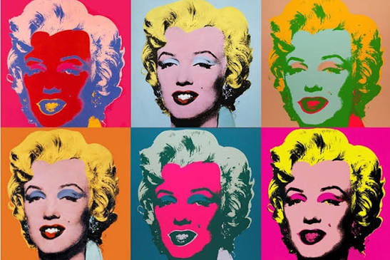
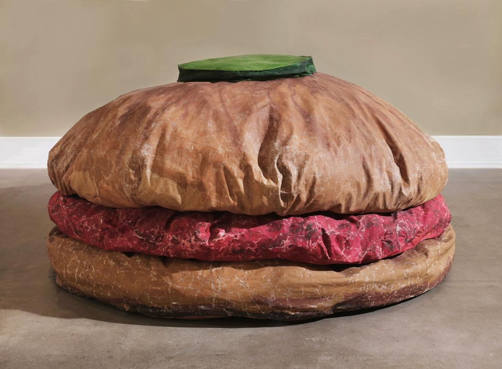

01CAMPBELL'S SOUP CANS
ANDY WARHOL · 1962Una de las obras más reconocidas de Andy Warhol. Utiliza un producto cotidiano de consumo masivo y lo transforma en una imagen artística.
Conocé algunas de las obras más representativas del Pop Art y cómo transformaron imágenes de la cultura popular en arte.

01Una de las obras más reconocidas de Andy Warhol. Utiliza un producto cotidiano de consumo masivo y lo transforma en una imagen artística.
Inspirada en la estética de las historietas, esta obra utiliza colores intensos, contornos negros y recursos propios de la impresión comercial.

03Oldenburg convirtió un alimento cotidiano en una escultura monumental, modificando su escala y la manera en que observamos los objetos comunes.